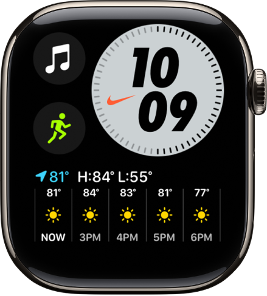

此表盘以“紧凑模块”为基础，包含三款自定义刻度盘设计。每款可选取最多三个复杂功能。
下方的文件数包括本地化资源。固件名称键能确认包的归属；组件的圆屏点击边界、亮屏过渡与 AOD 对照均待设备验证。
原始包 已解析属性表 Mach-O 方法与成员 ARM64 汇编 解出的图集
.strings × 88 .plist × 2 .car × 1 无扩展名 × 1
NTKShibaFaceBundle.bundleFACE_STYLE_SHIBA_DESCRIPTION_KINCAIDFACE_STYLE_SHIBA_DESCRIPTION色组与设备条件 Shiba.color.plist 共享色组与默认值
-[NTKShibaColorPalette tritium_primaryBackgroundColor];-[NTKShibaFaceView tritium_createFaceAnimator];-[NTKShibaFaceView tritium_transitionToFrameSpecifier:];-[NTKShibaTimeView tritium_transitionToTritiumOnWithProgress:];-[NTKShibaTimeView tritium_transitionToTritiumOffWithProgress:];-[NTKShibaColorPalette _activeTickColor];-[NTKShibaColorPalette _inactiveTickColor];-[NTKShibaColorPalette _usesOverrideTickColors];-[NTKShibaFaceView _applyTransitionFraction:fromOption:toOption:forCustomEditMode:slot:];-[NTKShibaFaceView tritium_createFaceAnimator];-[NTKShibaFaceView tritium_transitionToFrameSpecifier:];-[NTKShibaFaceView setOverrideDate:duration:];-[NTKShibaFaceView _applyTransitionFraction:fromColorPalette:toColorPalette:animateElements:];-[NTKShibaFaceView _applyTransitionFraction:fromView:toView:];-[NTKShibaFaceView _cleanupTransitions];-[NTKShibaFaceView setTransitionOlympusView:];-[NTKShibaFaceView transitionOlympusView];-[NTKShibaTimeView _hourTickCount];-[NTKShibaTimeView _minuteTickCount];-[NTKShibaTimeView _hourMinuteHandFillColorForColorPalette:];-[NTKShibaTimeView _secondTickActiveColorForColorPalette:];-[NTKShibaTimeView _secondTickInactiveColorForColorPalette:];-[NTKShibaTimeView applyTransitionFraction:fromColorPalette:toColorPalette:animateElements:];-[NTKShibaTimeView tritium_transitionToTritiumOnWithProgress:];-[NTKShibaTimeView _hourMinuteHandStrokeColorForColorPalette:];-[NTKShibaTimeView _secondHandColorForColorPalette:];-[NTKShibaTimeView tritium_transitionToTritiumOffWithProgress:];-[NTKShibaColorPalette background];-[NTKShibaColorPalette complicationsAlternateColor];+[NTKShibaColorEditOption _snapshotKeyForValue:forDevice:];+[NTKShibaColorEditOption optionWithColor:forDevice:];+[NTKShibaColorEditOption _orderedValuesForDevice:];-[NTKShibaColorEditOption pigmentEditOption];-[NTKShibaColorEditOption localizedName];-[NTKShibaColorEditOption _valueToFaceBundleStringDict];-[NTKShibaColorEditOption color];-[NTKShibaColorPalette _background];-[NTKShibaColorPalette tritium_primaryBackgroundColor];-[NTKShibaColorPalette _activeTickColor];-[NTKShibaColorPalette _complicationsAlternateColor];-[NTKShibaColorPalette _inactiveTickColor];-[NTKShibaColorPalette _usesOverrideTickColors];+[NTKShibaFace _complicationSlotDescriptors];+[NTKShibaFace _richComplicationSlotsForDevice:];+[NTKShibaFace _orderedComplicationSlots];+[NTKShibaFace _defaultSelectedComplicationSlotForDevice:];-[NTKShibaFace selectOption:forCustomEditMode:slot:];-[NTKShibaFace complicationsColorRenderingUsage];-[NTKShibaFace _numberOfOptionsForCustomEditMode:slot:];-[NTKShibaFace _defaultOptionForCustomEditMode:slot:];-[NTKShibaFace _indexOfOption:forCustomEditMode:slot:];-[NTKShibaFace _optionAtIndex:forCustomEditMode:slot:];-[NTKShibaFaceView _homeScreenBackgroundColor];-[NTKShibaFaceView createFaceColorPalette];-[NTKShibaFaceView _applyTransitionFraction:fromOption:toOption:forCustomEditMode:slot:];-[NTKShibaFaceView layoutSubviews];-[NTKShibaFaceView _applyOption:forCustomEditMode:slot:];-[NTKShibaFaceView _prepareForEditing];-[NTKShibaFaceView _cleanupAfterEditing];-[NTKShibaFaceView _legacyShouldSwapGraphicCircularComplicationColors];-[NTKShibaFaceView palette];-[NTKShibaFaceView configureViewsForEditing];-[NTKShibaFaceView updateMonochromeColorForRichComplicationView:];-[NTKShibaFaceView _applyTransitionFraction:fromColorPalette:toColorPalette:animateElements:];-[NTKShibaFaceView updateWithPalette:isMulticolor:];-[NTKShibaFaceView _updateComplicationsWithColor:alternateColor:isMulticolor:];-[NTKShibaFaceView layoutOlympusView];-[NTKShibaFaceView multicolorPaletteReplacement];-[NTKShibaFaceView setMulticolorPaletteReplacement:];-[NTKShibaTimeView _hourMinuteHandFillColorForColorPalette:];-[NTKShibaTimeView setPalette:];-[NTKShibaTimeView _secondTickActiveColorForColorPalette:];-[NTKShibaTimeView _secondTickInactiveColorForColorPalette:];-[NTKShibaTimeView layoutSubviews];-[NTKShibaTimeView applyTransitionFraction:fromColorPalette:toColorPalette:animateElements:];-[NTKShibaTimeView _hourMinuteHandStrokeColorForColorPalette:];-[NTKShibaTimeView _secondHandColorForColorPalette:];-[NTKShibaTimeView palette];